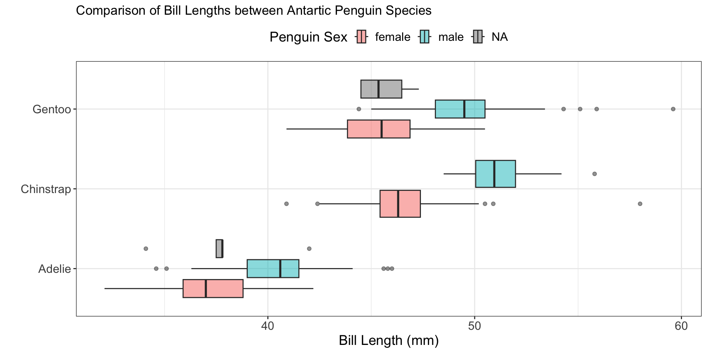
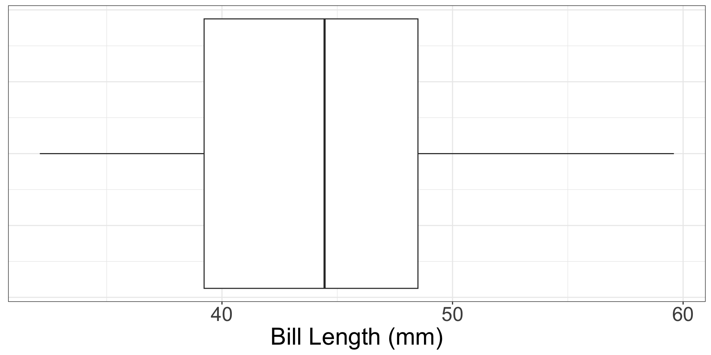
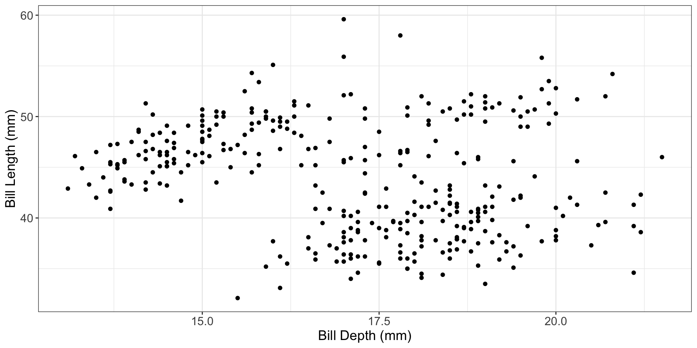

Visualizing & Summarizing Numerical Data
STAT 313
Researching Survey Design
5-minutes
If you would like to participate
- Complete consent form (say yes)
If you would not like to participate
- Complete consent form (say no)
Visualizing Numerical Variables
Warm-up
Where are variables being included in this plot?
What objects are being used to represent the data?
Today’s Layout
- Review visualizations for numerical variables
- Discuss the pros / cons of each visualization
Univariate (One Variable) Visualizations – For Numerical Data
- Histogram (or Dotplot)
- Boxplot
- Density Plot
Histogram

- Is
counta variable in the dataset? - How did
ggplotdecide how tall each bar should be?
What are the strengths of a histogram?
- Inspect shape of a distribution (skewed or symmetric)
- Identify modes (most common values)
What are the weaknesses of a histogram?
- Do not plot raw data, plot summaries (counts) of the data!
- Sensitive to the width of the bins (
binwidth)
Boxplot


What calculations are necessary for creating a boxplot?
What are strengths of a boxplot?
- Easy to flag unusual observations
- Easy to see the median
What are weaknesses of a boxplot?
- Don’t plot raw data
- Only plot summary statistics
- Hide multiple modes

Density Plot

- A smooth approximation to a variable’s distribution
- Plots density (as a proportion) on the y-axis
What are strengths of a density plot?
- Inspect shape of a distribution (skewed or symmetric)
- Identify modes (most common values)
- Less jagged than a histogram
What are weaknesses of a density plot?
- Do not plot raw data, plot summaries (proportions) of the data!
- y-axis is difficult to interpret
- Can over smooth and hide interesting shapes
Bivariate (Two Variables) Visualizations – For Numerical Data
Scatterplots (Week 2)
Faceted Histograms (Week 3)
Side-by-Side Boxplots (Week 3)
Stacked Density Plots (Week 3)
Scatterplots
What are the geometric objects being plotted in a scatterplot?
“The scatterplot the most generally useful invention in the history of statistical graphics.”
What are strengths of a scatterplot?
- Plots the raw data!
- Inspect form, strength, and direction of a relationship
- Identify unusual values
What are weaknesses of a scatterplot?
- Can get “busy” when there are lots of observations (points)
Multivariate (3+ Variables) Plots
There are two main methods for adding a third (or fourth) variable into a data visualization:
Colors
- creates colors for every level of a categorical variable
- creates a gradient for different values of a quantitative variable
Facets
- creates subplots for every level of a categorical variable
- labels each sub-plot with the value of the variable
Colors in Scatterplots – Numerical Variable

Colors in Scatterplots – Categorical Variable

Why not use facets with a numerical variable???
Due by Wednesday
- Visualizing Numerical Data – Reading Guide, Part 2
- Visualizing & Summarizing Numerical Data – Concept Quiz
- Exploring Numerical Data – R Tutorial, Part 1
- Summarizing with Statistics – R Tutorial, Part 2
Deadline Policy
If you cannot submit an assignment by the deadline, you are required to submit a deadline extension request before the assignment deadline has passed.
Starting Statistical Critique 1
Step 1: Go to What’s Going on in this Graph and pick a visualization to critique
Step 2: Choose between the two scientific papers provided (to focus on for your Statistical Critiques)
Step 3: Choose a visualization from the paper to critique
Step 4: Complete the Statistical Critique!